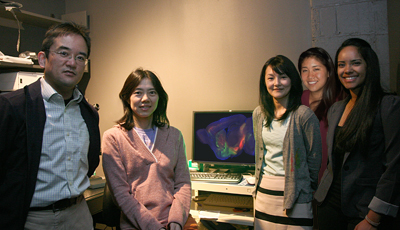
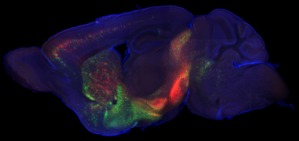

News Archives : 2012 : The Inputome of Dopamine Neurons Identified [Uchida Lab]
by Naoshige Uchida
June 7, 2012

(L-R) Naoshige Uchida, Mitsuko Watabe-Uchida, Sachie K. Ogawa, Lisa Zhu, and Archana Vamanrao
A central goal in neuroscience is to understand how diverse types of neurons interact to form complex networks. A critical step toward this goal is to find out the input-output relationships of a neuron, that is, what inputs a given neuron receives and how it computes its output. However, the vast complexity of most neural circuits makes this a daunting task. A given brain area typically consists of many types of neurons, but conventional tracing experiments do not distinguish between these types. Injecting conventional neural tracers (e.g. fluorescent chemicals or sugar-binding proteins) ends up labeling inputs to all neurons in the injection site, irrespective of their identify.
The fatal rabies virus travels from the wound of entry all the way up to the central nervous system by traveling across synapses in a “retrograde” fashion (from postsynaptic neurons to presynaptic neurons). This ability, deadly in disease, can be turned into a powerful means to study the connectivity of neurons. In 2007, Edward Callaway’s group at the Salk Institute modified the genome of the rabies virus so that both infection and transsynaptic spread of the virus can be limited to certain populations of neurons (Wickersham et al., 2007). For the first time, this provided a way to identify direct inputs to a distinct type of neurons.
In a study recently published in Neuron, we applied this technique to obtain the first comprehensive list of monosynaptic inputs to midbrain dopamine neurons from the entire brain in mice. Midbrain dopamine neurons, essential for reward and motor control, exist primarily in two anatomically adjacent areas: the ventral tegmental area (VTA) and substantia nigra pars compacta (SNc). VTA dopamine neurons are excited by reward but are inhibited by aversive events (they encode “values”). On the contrary, SNc dopamine neurons are excited by both rewarding and aversive events (they encode “saliency”). Although these distinct firing patterns are consistent with the long-held views that VTA dopamine neurons are important for reward, and SNc dopamine neurons are important for motor control (SNc dopamine neurons degenerate in Parkinson’s disease), the mechanism underlying this difference is unknown. The present study aimed to identify the different inputs to dopamine neurons in these two areas.
We found that dopamine neurons in these two areas receive inputs from overlapping yet distinct areas. For example, the motor cortex and the subthalamic nucleus, often regarded as motor areas, project preferentially to SNc dopamine neurons, while the orbitofrontal cortex and the lateral hypothalamus, known to process reward or subjective values, project preferentially to VTA dopamine neurons.
Understanding cell type-specific connectivity might also provide insights into brain disorders and therapeutic approaches. For example, the subthalamic nucleus is the most popular target for deep brain stimulation for Parkinson’s disease. Although the mechanism underlying deep brain stimulations is unclear, our study suggested that some of the complex effects of deep brain stimulation may be explained by the direct excitation of residual SNc dopamine neurons.
Renaissance of neuroanatomy and “inputomics”: The neuroscience community has increasingly realized that knowing the connectivity of neurons is essential to understand the function of neural circuits. Starting from this premise, experiments in “connectomics” have been undertaken at various levels, ranging from mapping microcircuits with serial electron microscopy to tracing major long-range connections (axon bundles) in human brains using magnetic resonance imaging. Our approach is intermediate between these two examples, at the “mesoscopic” or cell-type scale. We believe that this approach will be a powerful means to study how a given type of neuron combines its inputs to function properly in a circuit.
Read more in Neuron
Read more in the Harvard Gazette
Direct inputs to dopamine neurons. Green dots represent neurons providing inputs to VTA dopamine neurons whereas red dots represent neurons providing inputs to SNc dopamine neurons. Image courtesy of Mitsuko Watabe-Uchida and Sachie Ogawa.
[June 7, 2012]